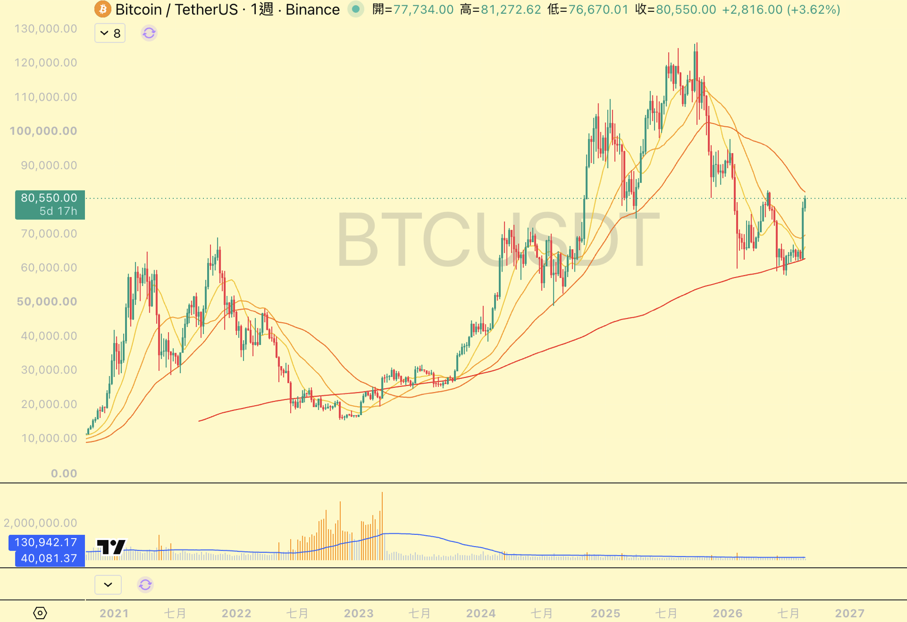

追高之前先看量
怎麼分辨「還能追」跟「別人已經在出貨」 ｜ 資料日期：2026 年 8 月 25 日
先講一件我以前做錯的事｜我以前只敢買跌下來的。愈跌愈買，覺得便宜就是機會。2023 年那次我在下跌的路上一路接 Meta，接到一百塊附近被槓桿掃出場，然後它漲到六百。那次之後我學到的不是「不要抄底」，是我根本沒在看有沒有人跟我一起買。這頁講的就是那件事：量。
「已經漲這麼多了還能買嗎」——這題我自己也怕過，而且怕的時候通常就真的錯過了。後來我把它拆成三個可以查的條件，查完再決定，比用感覺猜好很多。三個條件都是公開資料，你的看盤軟體裡本來就有，不用買什麼東西。
| 條件 | 我怎麼看 | 過關的樣子 | 沒過關代表什麼 |
|---|---|---|---|
| 一 · 量 | 週線成交量，跟過去一年的平均量比 | 這一週的量是一年均量的 1.5–2 倍以上 | 沒有新的錢進來，只是少少的人在把價格推上去 |
| 二 · 位階 | 這一段漲勢是剛起來，還是已經走很久了 | 剛從盤整區出來、離起漲點不遠 | 你買的是別人的獲利了結對手單 |
| 三 · 題材 | 有沒有具體的事情在推它（訂單、財報、產業循環） | 講得出一句話為什麼是現在 | 沒有故事的漲勢，跌回去的時候你不會知道該不該留 |
說明：這三個是我自己在用的門檻，不是市場公認的標準。1.5–2 倍那個數字是我自己抓的，你可以照自己的標的調——流動性差的小幣本來就更容易爆量，門檻要拉高；大型股 1.5 倍就很有意義了。
本頁為個人研究整理，不構成投資建議；下面「什麼情況我不進」那一段請務必一併看完。
一句話｜價格會騙人，量比較難騙。同樣漲 20%，有量的漲跟沒量的漲，是兩件完全不同的事。
為什麼量比價格可信
- 價格只要少數人就推得動。成交量低的時候，買盤薄、賣盤也薄，一筆單就能把價格拉上去一截。你在圖上看到一根很漂亮的長紅，實際上可能只是沒人在賣而已。
- 量代表有多少錢真的換手了。成交量是那段期間實際成交的數量。量放大表示有一批新的錢願意在這個價位接手——那才是「行情」，不是「跳動」。
- 沒量的上漲，回頭也一樣快。推上去的錢很少，代表撐住它的錢也很少。這種漲勢我不追，不是因為它不會漲，是因為我沒有辦法判斷該在哪裡停損。
怎麼看（三步，五分鐘）
- 第一步：把圖切到週線。日線的量每天跳來跳去，雜訊太多。週線一根＝一週，看得出趨勢。
- 第二步：把成交量指標打開。TradingView、券商 App、交易所 App 的指標清單裡搜 Volume 就有，參數用預設的不用調。加上去之後圖表下方會多一條柱狀圖。
- 第三步：拿最近這幾根跟過去一年比。不用算精確的倍數，用眼睛看就夠了——把畫面拉到看得到過去一年，最近這幾根明顯比那一整片高出一截，就是有量；跟旁邊差不多或更矮，就是沒量。想要精確一點，成交量指標可以加一條移動平均線（預設就有），柱子高過那條線一倍以上就是了。

這張圖在說什麼
- 2022 到 2023 那一片橘色柱又高又密。那段是價格最低的時候，但成交量是整張圖最大的——一堆人在那個位置換手。事後看，那裡就是底部區。
- 2024 之後整條量帶就扁下去了。可是價格在那之後還一路往上衝，2025 年還創了新高。價格創新高、量卻沒跟上——這種背離我會很小心，因為它代表把價格推上去的錢，比前一波少很多。
- 最右邊這一根拉上來了，但量還是貼在地上。所以我到現在都還沒開槓桿部位，手上還是現貨。我在等的就是下面那排柱子先站起來——它站起來，我才會相信這一波後面有錢。
補充｜「無量上漲」不等於「一定會跌」。它只是代表這一段行情的參與者少、你能拿到的資訊少。有些標的可以無量漲很久，一路把不信的人甩在後面。這個條件過濾掉的是「我看不懂的行情」，不是「會跌的行情」。
風險提醒｜量放大也可能是出貨。高檔爆量長黑，那是有人在大量賣給你。所以量不能單獨看，一定要配下一項的位階——低檔爆量比較像進場，高檔爆量比較像離場。
一句話｜同一個標的、同一個題材，在起漲點買跟在右上角買，是完全不同的兩筆交易。
我怎麼判斷「剛起漲」
- 前面有一段橫著走的盤整。價格上上下下但沒有明顯方向，走了一陣子，然後帶著量往上突破。這種型態我最喜歡，因為盤整那段就是換手的過程，籌碼已經換過一輪了。
- 離那段盤整區的上緣不遠。剛突破、還在附近，那就是還早。已經離開盤整區一大段、中間沒有任何回檔，那就是晚了。
- 不是「便宜」，是「早」。這兩個不一樣。跌 80% 的東西很便宜，但它可能還在下坡；剛突破的東西不便宜，可是它在上坡的起點。我現在買的是後者。
這是我改過來的地方
- 以前我只買跌深的。覺得跌得多就是機會，看到綠的就想接。結果一直在「買低賣更低」——接住的東西繼續跌，然後在最痛的時候被洗出去。
- 玩《大富翁 4》的時候想通的。那個遊戲贏的關鍵是股市不是買房子。我一開始照現實的習慣買便宜的股票，結果跟現實一樣，便宜的還會更便宜。後來改成買正在漲的、漲的留著跌的換掉——就一直贏。
- 不代表不能抄底，代表要分清楚在做哪一件事。抄底是賭反轉，追勢是跟著已經發生的事走。兩種都可以做，但用的條件不一樣，錢也要分開算。
補充｜這頁講的是追勢型的進場。如果你要做的是另一種——「跌下來了要不要接」——那是另一套判斷，我寫在分批進場怎麼分那頁，裡面講的是 KD 低於 20 才啟動那一套。兩頁是左右手，不要混著用。
風險提醒｜「剛起漲」是事後才看得出來的。當下你只知道它突破了，不知道這是真突破還是假突破——假突破（衝出去又跌回盤整區）很常見。所以進場之後價格跌回盤整區裡面，就是這個判斷錯了，該認就認，不要凹成長期投資。
一句話｜如果你講不出它為什麼漲，那你也不會知道它為什麼跌，到時候就只能靠猜的。
我在找什麼
- 具體的事，不是氛圍。「AI 很紅」不算，「這家簽了一筆多大的訂單」「這一季營收年增多少」「這個產業的循環轉上來了」才算。要具體到你可以講給朋友聽。
- 熱門產業優先。我只看現在有錢在流進去的產業，這幾年就是 AI 那一串。醫療、食品那種我沒興趣——不是它們不好，是我對它們沒有判斷力。
- 能講出來，就守得住。買進的理由寫下來，之後每次它跌你都可以回去對一次：那個理由還在嗎？還在就抱著，不在了就走。這比看著紅綠決定要不要停損可靠太多。
補充｜三個條件裡這個最主觀，也最容易自我說服——想買的時候，故事總是編得出來。所以我的順序固定是先看量、再看位階、最後才問題材。前兩個是客觀的，讓它們先擋一輪。
上面三條是「什麼時候可以」，這三條是「什麼時候我會放過它」。放過一檔的成本只是沒賺到，追錯一檔的成本是真的賠錢——這兩件事不對等，所以我寧可標準嚴一點。
三種我會直接跳過
- 無量創新高。價格上去了，下面的量沒有跟上。這種我不碰，因為我看不出來誰在買、也就抓不到它會在哪裡停。
- 已經連漲很久、中間完全沒回檔。不是說它不會再漲，是說我進去之後第一個回檔就會把我洗掉——沒有回檔過的走勢，你不知道它的支撐在哪，停損就無處可放。
- 只有故事、沒有量也沒有價。消息滿天飛但圖上什麼都沒發生。這種通常是還沒開始，或是根本不會開始，兩種我都寧可等它動了再說。
風險提醒｜這套規則有一個很實在的代價：你會眼睜睜看著一堆行情走掉。條件沒到就是不進，而條件常常不到。我自己這個月就錯過一整段，看著很可惜。接受不了這件事的話，這套規則不適合你——但我寧可錯過，也不想再經歷一次被槓桿掃出場然後看它漲六倍。
訊號到了只解決「可以開始了」，沒有解決「錢怎麼放進去」。我不會一次全押——條件全過的時候我也還是分批，因為判斷對不對是要時間證明的，一次押完就沒有修正的機會了。
- 先決定這一筆總共要放多少。先有總額，才有每次買多少。沒設總額的分批會愈買愈多，最後變成全押。
- 再決定分幾次、多久買完。我的做法是抓一季，分成三到四個月慢慢買。
- 買完就停，不要因為它繼續漲又追加。追加是新的一筆交易，要重新跑一次上面那三個條件。
怎麼分批寫在另一頁｜總額怎麼抓、一季要除以幾、每次買多少（有查表）、還有其他四種分批方式的對照，都在 分批進場怎麼分：一季的錢，每天買一點。這頁決定「開不開始」，那頁決定「開始之後怎麼買」。